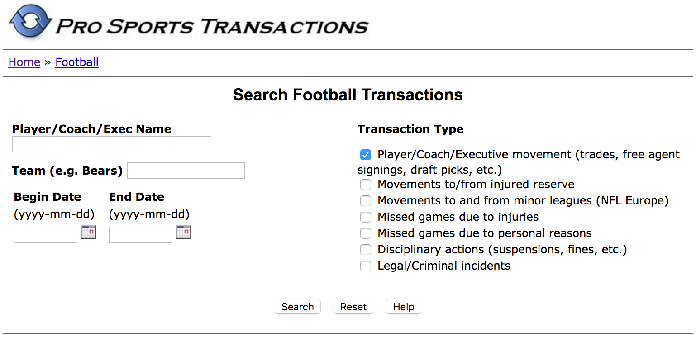
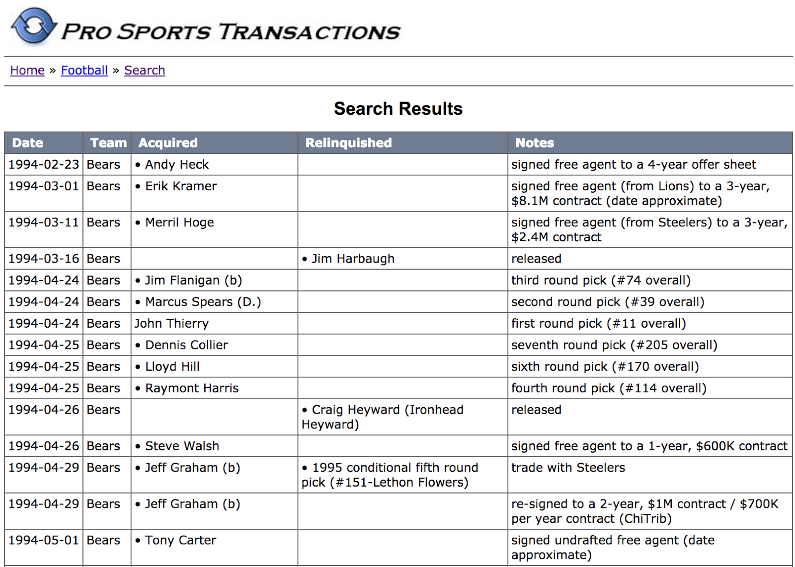
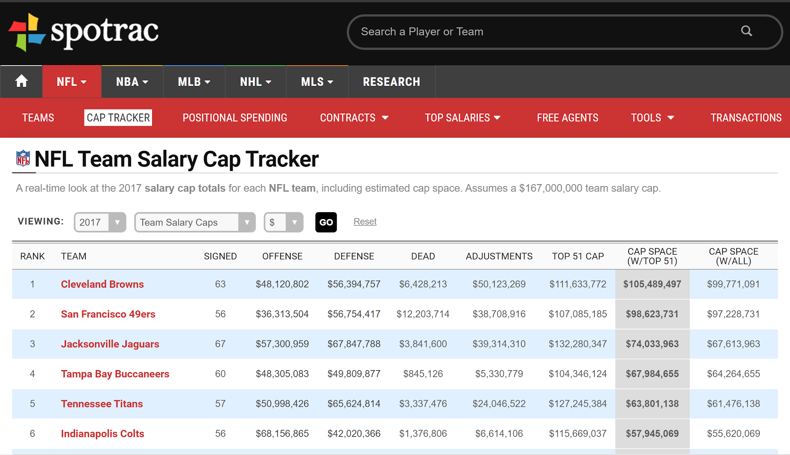
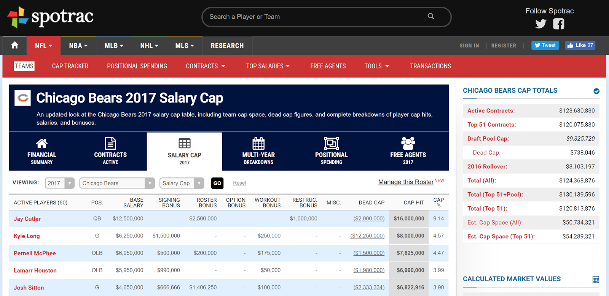

Blog Post 1
Data collection and integration.
Introduction
Summarizing our “big data” vision from our pre-proposal, our main goal for this project revolves around aiming to answer the question of whether professional athletes are over/undervalued taking into account their salary as well as a metric for analyzing their relative importance to their team. Our main league of interest is the National Football League, in which quarterbacks are without question viewed as the single player with the most influence over the course of a game. To get the notion of player valuation, the metric we are using to analyze NFL players is Appropriate Value (AV), a metric that is widely used to measure the level of contribution and/or impact a player has had on the league. This metric, as with any, can be examined at a statistical level later on, however for this first blog post we will not get into the details of the structure of it.
Player valuation is important at many levels, one of which is for organizations as a tool to measure if GMs can better utilize the data available to them to make more informed decisions about whom to draft/trade, and how to optimally allocate their salary cap. At first glance then, relevant data are those pertaining to transactions, drafts, salaries as well as appropriate value statistics. For purposes of analyzing budgetary spending and salary caps, we must also keep in mind that such data are limited to years in which the salary cap came into effect. There is no restriction on how far back we go in the data if we wish to conduct further analysis on player valuation with purely AV data, and disregard salary comparisons completely.
Division of Labor
Since we’re still in the initial steps of our project, currently we plan to work on data extraction and cleansing together. As we move further along, we plan to implement a division of labor that takes advantage of each team member’s passions and strengths. The exact division has yet to be determined, but for now we will tentatively assign the three main components of our project as follows:
-
Data Warehousing and Integration - All
-
Machine Learning - Edan, Isaiah
-
Visualization - Kevin, Steven
Completed Steps
Transaction Data
To get at a basic understanding of player valuation, we looked at data from three different sources - transaction data, AV (appropriate value) data, and salary data. A quick google search of NFL transaction and draft data led us to prosportstransaction.com, a repository of transaction/draft data for baseball, basketball, football, among other sports. The filters on prosportstransaction were incredible, and allowed for searches by player name, teams, and start/end date.

Upon a valid query, e.g. for the Bears from 1994-01-01 to 1995-01-01, the results are listed in table format:

We used Python’s BeautifulSoup library for the scraping here, the source code itself was very short - about 40 lines. Minimal cleaning was done, as the unicode character for the bullet points persists in our csv. This and other unnecessary details will simply be removed through regular expression matching or modifying the scraping code. Regardless, the cleaning task here will not prove to be too difficult.
Transaction data proves useful for us especially in the context of historical analyses of player trades and drafts. The ‘Notes’ column of the search results may contain pertinent information for predictive analysis, or constructing visualizations with the notes column as categorical variables, based on different round draft picks or free agent signings.
AV Data
In doing this part, we collected AV data per year for all players from 1994 to 2016. For instance, the highest AV over this time period was achieved by Ladainian Tomlinson in 2006, with an AV of 26, while the lowest was achieved by Ryan Lindley in 2012, with an AV of -5.
Scraping this data was performed in a similar manner to that in Part 1. One challenge faced was that Pro-Football-Reference insists on only showing 100 players per page, so we had to loop through all 427 pages in order to get the data for all the players.
Minimal cleaning has been done thus far, and the results are currently stored in a CSV file. It makes sense to put this in a SQL database later on, as it would be optimal to quickly query the data for year and player.
The AV data is our current proxy for how well a player played, or in other words, how valuable they are. This will inform our analysis of the ‘proper’ contract value for a given player.
Salary Data
We’re currently working to collect ‘cap-hit’ data for all the players referenced in our AV data. Cap-hits measure each player’s annual compensation and contribution to the salary cap. Thus far we haven’t been able to find a dataset that accounts for all the players that we we’ll be using. Most readily available data only covers the highest paid individuals from a team for a given season.
Scraping data from multiple data sources and integrating the results may be necessary in order to piece together adequate salary data for our analyses.
Next Steps
Our immediate next steps will involve cleaning the AV and transaction data that we have extracted from profootballreference.com and prosportstransaction.com, respectively. This is necessary because we acquired an enormous amount of data from both of these sources and we need to make sure that it is in a consistent and legible format. Once we clean this data, we plan to move it into a SQL database so that we can query it in order to draw conclusions regarding the importance of different positions in the NFL and analyze the value that teams have obtained from transactions that have taken place since the salary cap was implemented.
Once we finish this, we need to figure out how to obtain salary data - ideally we’d obtain the salary cap of each team for every year since 1993. As discussed above, we’ve had some trouble finding easily-extractable salary data, but since we consider this to be an important part of our analysis, our goal is to find a data source that would allow us to obtain the aforementioned salary data through either an API, a CSV file download, or web scraping. One route we could go, which we plan to explore before the midterm report, is scraping spotrac.com for its extensive salary data. As can be seen below, it has data for the salary cap of each team in the NFL. The one downside is that it only seems to contain salary cap data since 2011, so we’d have to either find another source for salary cap data before that year or pivot the scope of our project. Once we are able to obtain this data, we will clean it and add it to our SQL database as well - just as we plan to do with our AV and transaction data.


Once we are done with the aforementioned data warehousing and integration aspects of our project, we hope to begin work on the visualization and machine learning aspects of our project. Although we haven’t delved too deeply into these aspects yet, some ideas we’ve had for each aspect are listed below:
-
Machine Learning
-
Carmelo ranking of various players/positions - this is a predictive analysis of the future performance of players based on historical statistics. It could help us more accurately predict the value of different positions in the NFL. It could also help us analyze the quality of trades and the fairness of current salaries.
-
Prediction of the 2017 NFL draft using our data.
-
Visualization
-
Heat map of expected value of different position.
-
Heat map showing with which frequencies different positions are taken at different spots in the draft.
-
Visualization of whether each position is underpaid or overpaid, and by how much (i.e. bar graph showing average pay and what pay should be for the average player at each position).
Midterm Report
More data integration, visualizations, and next steps.
The hardest part of our project thus far has certainly been data extraction. We’ve run into issues with the availability of data and the amount of time that it would take to scrape data from profootballreference. Salary data has been particularly difficult to find. Spotrac has more complete salary data for recent years but no players have complete salary data for the timespan that we have selected for AV data. Other difficulties arose when trying to scrape player positions and URLs (to serve as id’s) from profootballreference. Our initial approach would have taken about 20hrs to complete given the way that data is organized on the website. An alternative approach that we pursued only took 20 minutes but required deeper exploration of the site and collective effort on the part of the team to make things feasible.
Challenges: Some of the greatest challenges that we’ll be facing moving forward will be how we utilize transaction and salary data to gain the most insight from relatively sparse salary data. Fortunately we’ve been able to find near complete salary data for the past 7 years. However, this may affect the type of insights that we want to make using this data.
- Spotrac.com salary data scraping
- Assigning player IDs to players
- Creating a standard for position names
Concrete results/initial insights: Our challenges with data cleaning and integration were plenty, resulting in us diverting our resources to answering how we would approach answering some of the initial questions we proposed in our methodology. In addition to determining the fair value of a player (according to the methodology described in the pre-proposal), one area of interest we turned our attention to is valuing draft picks.
Motivation:
Drafting is the edge every NFL team has. In theory, the amount of value every team gets out of its free agency spending is the same, in that there is a salary cap and we can assume each contract is ‘fair.’ Drafting, however, is where teams can get cheap labor - i.e. salary is far less than fair salary. Cheap labor only lasts 4-5 years - the length of the rookie contract. We can assume that afterwards, the price the team pays for the player is equal to the fair salary of the player.
This is why draft picks are worth so much - they increase the talent per dollar spent for a team.
In other words, a great draft, in theory, should give the team a boost for the next 4-5 years only.
Example: The Patriots were docked their first round pick in 2016. They will be feeling this loss until 2021, when that player in theory would have begun their second contract.
- The Seahawks drafted extremely well between 2010 - 2012. This draft gave them a big boost in spending efficiency - i.e. talent per dollar paid until they had to give second contracts to those players. So now that all those players are on their second contracts, the edge they have is now the 2013 or 2014 drafts - which the Seahawks haven’t been doing so well on, and thus their performance has dropped correspondingly.
- In theory, we can predict how good a team will be in a given season based on its past 4-5 drafts alone. This is actually something we can look into as a predictor. This, however, operates under the assumption that no team has an edge in free agency (not necessarily true), continuity does not matter (i.e. for culture purposes it might), and coaching is equal across teams (almost definitely not true).
Case Study - Chandler Jones
Chandler Jones was traded for a second round pick (plus Jonathan Cooper, but let’s ignore that for simplicity), even though that second round pick would almost certainly not be as good as Chandler Jones (i.e. comparing expected Career AV for that pick with Chandler Jones’ expected Career AV). If we consider this trade from the Patriots' perspective, Chandler Jones had just one year left on his rookie deal - i.e. one more year of cheap talent. After the one year, he would have to be compensated fairly, and a second round pick would have four years left on his rookie deal - four years of cheap talent.
Chandler Jones was paid 7.79 million in 2016. Suppose his fair contract value was 13.79 million. Then Chandler Jones offered an additional 6 million dollars above fair value. Over the four years from that second round pick, would the dollars above fair value sum to over 6 million dollars? We can parlay this into a value system for draft picks.
Assumptions:
- A team’s goal is to maximize talent per dollar spent.
- Talent per dollar spent is equal for all teams in free agency.
- The value of a draft pick is its dollars above fair value summed over all years of its contract.
For example, suppose using the above, not including draft picks, the Brown’s total assets are worth 170 million for 2017. Total assets includes fair value for all the players, plus free salary cap space. Suppose on average, the first overall pick outperforms his rookie contract by 4 million dollars in Year 1, 5 million dollars in Year 2, 6 million dollars in Year 3, 8 million dollars in Year 4, and 4 million dollars in Year 5. Then by using the first overall pick, we expect the Brown’s total assets to increase by 4 million to 174 million in 2017, and increase by 5, 6, 8, and 4 million dollars respectively in 2018, 2019, 2020, and 2021. We can then value the first overall pick at 4 + 5 + 6 + 8 + 4 million dollars - or $27 million dollars.
Methodology:
Contract values are relatively fixed for draft picks in terms of both length and value (i.e. a player drafted Round 2, pick 35 will sign a 4 year deal worth roughly 6.38 million), due to constraints in the CBA (Collective Bargaining Agreement) signed in 2011.
For a given unused draft pick: We know the approximate contract values over each year of the rookie contract for that draft pick, and can approximate the fair salaries for each year of the rookie contract based on data for that pick in previous years. Since the salary cap affects fair contract values, and the salary cap is increasing for the NFL, we may need to adjust our fair salaries for projected salary cap increases. We sum the difference between each year’s fair salary and actual salary to determine the draft pick’s worth.
Completed Steps - Midterm Report
Edan
I worked on two main tasks between the submission of our first blog post and now. The first was scraping salary data from the web, and the second was creating a script that would load all of the data that we collected from various sources and have thus far stored in CSV files into a SQL database that followed the schema that we discussed. These two tasks were relatively open-ended and thus required me to navigate various challenges as I tried to complete them. The steps I took to complete these tasks and the challenges I encountered are outlined below.
-
Scraping Salary Data
I decided to scrape salary data from spotrac.com using BeautifulSoup. Spotrac.com, which despite only officially displaying salary data for NFL teams since 2011, has some data from prior years that can be accessed by changing the year in the URL. Still, the farther away the years got from 2011, the less players that showed up on each team’s payroll - meaning that in the 1990s we only have salary data for a few players from each team. Unfortunately, we weren’t able to find any more comprehensive data from those years, so the data that we got from spotrac.com will have to suffice for earlier years as well. Another challenge that I encountered was duplicate removal. This entailed removng players that showed up more than once on the same team as well as players that showed up twice when scraping the data because teams that have had different names in the past could have two different pages on spotrac representing the same franchise - for example, if I put los-angeles-chargers in the URL and later san-diego-chargers in the URL, spotrac would return the same page for certain years, giving me duplicate data for the Chargers in that year. This also meant that I had to make sure that when I got salary data from teams using their old names, that this data was associated with the present-day name of the team. Finally, various players had hyphens in various sections - representing 0s - and I had to be careful when scraping this data with BeautifulSoup so as to not return nulls when I encountered these values.
-
Loading Data into a Database
In order to load data into SQL databases, I first had to create tables that mimic the schema that we decided on as a group. Unfortunately, as we continued to scrape data and figure out what information was available to us, this schema, and hence these tables, had to be continuously updated. I also had to make sure the primary keys and foreign keys that we had decided on in our schema fit the data that we had, and I had to declare these when creating each table and update them as the data available to us became clearer. In terms of primary keys, the main issue was coming up with consistent ID’s for players, positions, and teams that we could store in our tables. Since we got our data from various sources, this step was crucial for unifying our data. For example, team names, and thus their abbreviations, have changed multiple times between 1993 and 2017. In fact, the team that is currently known as the Los Angeles Rams, with an abbreviation of LAR on pro-football-reference.com, was known as the Los Angeles Rams until 1994 with an abbreviation of RAM on pro-football-reference.com and as the St. Louis Rams between 1994 and 2016 with an abbreviation of STL on pro-football-reference.com. Despite these different names, they still represent the same franchise, and thus I had to ensure that my database loading script changed all older team abbreviations to the abbreviation currently associated with that franchise. I then used the current team abbreviations as the team ID in my team table (which is referenced as a foreign key in various other tables).
We also had to figure out a feasible way to assign player ID’s to players. This was especially difficult considering various players in the NFL between 1993 and now have shared the same name - and might have even played on the same team at the same time. Thus, we decided to look at when a player was drafted in order to differentiate between players with the same name. This necessitated the assumption that no two players with the same name were drafted in the same round with the same pick. Since we were able to get the round and pick a player was drafted in when scraping our AV data, this allowed us to easily create unique player ID’s for all players drafted between 1993 and now and to make sure that these same ID’s were assigned to the same players in the AV table and the draft table. For drafted players, we decided to simply make their player IDs the year they were drafted combined with the pick they were drafted with. Still, this meant that we had various undrafted players/players that were drafted before 1993 in our AV dataset that didn’t have player IDs we could assign to them. We handled this by grabbing a unique URL for each player when scraping our AV Data. This allowed us to do the following: for each player in the AV dataset that didn’t have a player ID from the draft table, we checked if the unique URL associated with him had a player ID associated with it. If it did, it meant that we had already invented a player ID for that player and we simply assigned it to him. Otherwise, we created a player ID for that player in the same format as the player IDs used for the drafted players, using 0000 as the draft year and incrementing a counter to assign a unique pick to each undrafted player ID. Finally, we had to make sure that these player IDs were assigned to the right players in our salary data. Unfortunately, we weren’t able to find draft information associated with players in our salary data - so in order to assign the correct player IDs to these players, we had to assume that no two players with the same name played for the same team in the same year with the same position. We were then able to use a dictionary that mapped a tuple consisting of player name, team, year, and position to a player ID in order to assign that player ID to the player in the salary data.
This brings us to the final ID we had to figure out - position IDs. There are various positions in football, and these can be broken up into even more specific positions. For instance, the Offensive Line position, which is abbreviate OL, can be broken down into Guard (G) - which can be further broken down into Right Guard (RG) and Left Guard (LG), Tackle (T) - which can be further broken down into Right Tackle (RT) and Left Tackle (LT), and Center (C). Thus, when extracting data from various sources, we had to decide on a consistent way to identify all of these different positions. The final touches to this are still being applied, and we will discuss the decisions we came to in the next blog post. Furthermore, since certain players also played various positions throughout their careers, for the sake of simplicity, we decided to assign the position that the player started out with in the NFL as their position for their entire career.
Once all of this was figured out, the rest of the database loading was fairly simple - all I had to do was follow the schema, look at the order of the columns in the CSV that we were reading the data in from, and assign the values from the CSVs to the correct columns in each table.
Steven
My contributions between the initial blog post and this midterm report can be split into two sections: methodology hashout, and improved AV data scraping.
-
Methodology Hashout
Motivated by the novel, groundbreaking trade of Brock Osweiler to the Browns (who are considered top dogs in the NFL Analytics space), I was compelled to determine a fair valuation of draft picks - extending off our initial idea of valuing players. For reference, the Texans essentially gave away a second round pick for the Browns to take Osweiler’s contract off their hands. In other words, they were trading Osweiler for money! I was in part miffed by the wild variance in draft pick valuation by fans (often completely ignoring the impact of salary).
In particular, when building an NFL team, we must fundamentally understand the constraints that teams have to work with. The two key restraints are salary cap and roster size. Teams, then, want to maximize the collective talent of the 53 players, given their budget restraint.
Teams can either pay market value for the player - i.e. through free agency - or they can pay far less than market value. Thus, the value of the draft pick can, in theory, be equal to the added value above what the draft pick is actually paid. See more precise calculations in the actual writeup (see above in "Concrete results/initial insights").
-
Improved AV Data Scraping
There were three problems with our previous AV Data:
- The draft position (i.e. Round 1 Pick 5) were shown as dates, as opposed to strings (i.e. 1-5 would translate to January 5, 2017).
- We had no unique ID for players. What if two players had the same name?
- We didn’t have the players’ position. This was key for our planned analysis - checking AV by position, for instance. It was also useful for linking players between datasets - if in both datasets, there was a player of the same name playing for the same team at the same position at the same time, we can be pretty sure they were the same player.
Thusly, we had to get a unique ID for each player - write the draft position to the CSV file as a string (easy) - and get the position for each player.
For the unique ID, we noticed that every player on Pro-Football-Reference has a unique player page. So we took the URL of their player page when scraping.
Getting the position was much more difficult:
- The player’s position is not shown on the table in the Pro-Football-Reference Link. Thus, while scraping, we had to open the href link to every player’s profile to get their position. On each player’s profile page, there was a listed position - but we also had to consider that some players switch positions over their career, so we couldn’t use the listed position. We had to find their year-log (career stats for each year) and draw the position from there.
- However, this was impractical. Before, we had to open 427 URLs - one for each page we were scraping from. Now, for every URL from before, we had to open a player’s URL for all 100 players on the page - thus making our scraping process take approximately 100 times as long (20 minutes to ~2000 minutes or 30+ hours).
- In practice, this also crashed my computer.
- So we had to opt for a different strategy. On the Pro-Football-Reference AV rankings page, we could filter by position.
- So we filtered each position individually, and scraped from every single one of those.
- This necessarily created duplicates in our dataset - for example, a cornerback might show up as both a cornerback and a defensive back.
Kevin was a major assistance in creating functional BeautifulSoup code for this section.
Visualization
Kevin and Isaiah
For our visualization we decided to look at the distribution of AV scores across quarterbacks. The script was abstracted out such that it is straightforward to replicate for a different position, and we chose to examine a histogram of quarterback AV counts. This visualization is particularly interesting because it allows us to examine the numerical basis of the notion that the quarterback is the most important player for the success of a team. One noteworthy component of this visualization is that it shows us that the distribution for QB AV’s actually tends to follow a somewhat trimodal distribution with peaks at 0, 9 and 12. When we talk about quarterbacks colloquially, we tend to classify them into two classes ‘elite’ and ‘not elite’, focusing on a player’s ability to meet a certain threshold to transition between the two. In reality however, considering a quarterback’s ability in the context of 3 or 4 different classes may be of more utility to us and may be something that we can do with relative ease by fitting different normal curves to each peak and assessing the probability that a player’s performance is derived from one of those distributions. We could conduct a similar analysis for other positions to assess if how they are stratified in terms of performance. Additionally, we’d like to look at how these distributions change over time to assess the relative importance of each position through the 23 year period that we consider for our data.
We feel that we’re making good progress on our project but need to devote some time to formalizing what type of machine learning insights we’d like to make. Specifically, selecting appropriate features and classifiers for supervised learning tasks and deciding whether we would like to pursue any unsupervised learning tasks.
Blog Post 2
Database loading and machine learning.
Introduction
After the midterm report, we had scraped the bulk of our data:
- AV data from 1994 to 2016.
- Salary data from 1994 to 2021 (although data is incomplete before 2011).
- Draft data from 1980 to 2016.
We also conducted a few elementary analyses, resulting in the following visualizations from the midterm report:
For the second blog post, we worked on cleaning the data, loading it into a database, and tried our first hand at machine learning, creating a predictor for a player’s career AV given the team they were drafted to, their position, and their draft pick.
Database Loading
Process and Challenges
We were finally able to run the database loading script that we had been working on due to the fact that we had recently finished acquiring and cleaning all of the data that we needed. This stage proved formidable on two fronts:
- Deciding on the final set of position ID’s that we would employ so that the positions from our three main sources of data - draft data, AV data, and salary data - would match up.
- Assigning the correct player ID’s to players from these three different sources.
Our three main sources of data (draft data, AV data, salary data) each had a different ‘set’ of positions they used to categorize players (with significant overlap, of course). For instance, one source classified players as both left tackles and right tackles - while the other two sources would lump both left and right tackles as ‘offensive tackles.’
Our general philosophy was that we preferred more specific position classifications. For instance, we preferred ‘defensive end’ and ‘defensive tackle’ to ‘defensive linemen.’ Favoring specific over broad classification allows us to perform more practical analysis down the road - for instance, lumping cornerbacks and safeties together as ‘defensive backs’ probably doesn’t make much sense given how different their roles are to teams (as seen by the average and maximum earnings; cornerbacks earn more).
So in loading data to the database, when matching players between the data sources (i.e. if ‘Jane Doe’ was drafted in 1998 in the draft data, and ‘Jane Doe’ was paid $500,000 in the salary data in 1998, how do we know if it’s the same Jane Doe), we defaulted the ‘position’ value to the more specific position.
However, we did not always opt for the more specific classification. In the case of nose tackles, we combined them with defensive tackles, as only one source used the ‘nose tackle’ classification (giving us a small sample size) and the difference between nose tackle and defensive tackles is not terribly large (most defensive tackles can play ‘nose tackle’ roles in a pinch). We also chose to combine left tackles and right tackles as ‘tackles’.
Assigning the correct player ID’s to entries in the salary dataset proved more difficult than we initially anticipated. After running our database loading script and printing out the entries from the salary dataset that could not be matched up to entries in the AV dataset based on a tuple of (player_name, team, year), we obtained a list of around 3000 entries that could not be matched using this tuple. We investigated the list and realized that many of the issues occurred due to name variations - this could be anything from plain misspellings to the use of a nickname in one dataset and a full name in another to varying uses of punctuation and capitalizations in names between the two datasets. We decided to fix this by lower-casing all names and removing all punctuation from them when comparing names between the two datasets. This helped decrease the number of entries that could not be matched up, but there was still more that could be done. Next, we decided to relax the standards for comparing entries between the two tables - if our script couldn’t match up entries based on the aforementioned tuple, then it would try to match up on a different tuple that could plausibly link an entry from the salary table to an entry from the AV table. The order in which we compared tuples is listed below:
- (player_name, team, year)
- (player_name, ‘2TM’, year)
- Since some players played on two teams in the same year and thus their team is listed as ‘2TM’ in the AV dataset.
- (player_name, team, 2016) if salary_year > 2016
- For players who are signed beyond 2016 but obviously cannot be in the AV table for seasons past 2016 since they haven’t occurred yet.
- (player_name, team, year - 1) and (player_name, team, year + 1)
- For players who were injured or otherwise didn’t play one year but were on the same team the year before or the year after.
- (player_name, team)
- If the player was on the team in another year but for some reason doesn’t appear in the AV dataset in that year, the year before it, or the year after it.
- (player_name, year)
- If the player was listed as being on a different team in the AV dataset during that year.
- (player_name, position)
- If the player is still unmatched, try to match him to any player in the AV dataset that has the same name and the same position as him.
- (player_name)
- If the player is still unmatched, try to match him to any entry in the AV dataset that has the same name as him.
After doing this, we still had about 1000 entries from the salary dataset that did not match up to any entries in the AV dataset. Next, we decided to try to change the names of the remaining entries to see if that would result in a match. We thought of various names that could go by a nickname and their reciprocals and implemented these changes to the remaining entries using an if-else statement comprised of dozens of lines that looked like this:
if first_name == "michael":
first_name = "mike"
elif first_name == "mike":
first_name = "michael"
After changing the names, we tried to match up entries between the two tables again using the sequence of tuples described above. Using this new trick, we were able to get the number of entries that were unmatched to around 800. Finally, we printed out all unmatched entries of players who played in the NFL for 5 seasons or more and manually changed their names in the salary csv to match their names in the AV csv. We were now left with 761 entries who were still unmatched and thus existed in the salary csv but were not inserted into the SQL database due to the fact that they could not be assigned the correct player_id. Although we might decide to change this in the future, for now, we decided that it would be best to leave these entries out of the salary table in the SQL database for two reasons. First, none of the players listed among those 761 entries played more than 4 seasons in the NFL, meaning they would have minimal impact on our data. Second, 475 of those 761 entries represent entries for cap hits for 2017 and beyond. These entries obviously don’t have associated AV values, and thus are less important for our analysis, which relies on a combination of AV and salary data.
Thus, we now have all of our cleaned data stored in a SQL database. The schema for this database, along with some interesting queries that we ran to gain previously unattainable insight into our data, are highlighted below.
Schema
CREATE TABLE player(
id int not null,
name text not null,
PRIMARY KEY(id));
CREATE TABLE salary(
year int,
team_id text,
player_id int not null,
position_id int,
base_salary int,
signing_bonus int,
roster_bonus int,
option_bonus int,
workout_bonus int,
restructured_bonus int,
dead_cap int,
cap_hit int,
cap_percentage real,
FOREIGN KEY (player_id) REFERENCES player(id),
FOREIGN KEY (team_id) REFERENCES team(id),
FOREIGN KEY (position_id) REFERENCES position(id));
CREATE TABLE av(
player_id int not null,
year int,
team_id text,
position_id int,
age int,
av_value int,
games_played int,
games_started int,
pro_bowler int,
all_pro int,
FOREIGN KEY (player_id) REFERENCES player(id),
FOREIGN KEY (team_id) REFERENCES team(id),
FOREIGN KEY (position_id) REFERENCES position(id));
CREATE TABLE team(
id text not null,
name text not null,
PRIMARY KEY(id));
CREATE TABLE position(
id int not null,
name text not null,
PRIMARY KEY(id));
CREATE TABLE draft(
year int,
round int,
pick int,
team_id text,
player_id int not null,
position_id text,
age int,
last_year int,
games_started int,
career_av int,
draft_team_av int,
games_played int,
FOREIGN KEY (player_id) REFERENCES player(id),
FOREIGN KEY (team_id) REFERENCES team(id),
FOREIGN KEY (position_id) REFERENCES position(id));
Interesting Queries
Query: Players who had a cap hit of over $20,000,000 and had an AV value of less than 5 in any given year.
select player.name, salary.cap_hit, av.av_value, av.year,av.position_id from player, salary, av where player.id = salary.player_id and player.id = av.player_id and salary.cap_hit > 20000000 and av.av_value < 5 and av.year = salary.year;- Result:
Charles Johnson|20020000|4|2015|DE
Tony Romo|20835000|0|2016|QB
Query: Players who had a cap hit of over $20,000,000 and had an AV value of less than 10 in any given year.
select player.name, salary.cap_hit, av.av_value, av.year,av.position_id from player, salary, av where player.id = salary.player_id and player.id = av.player_id and salary.cap_hit > 20000000 and av.av_value < 10 and av.year = salary.year;- Result:
Larry Fitzgerald|20500000|5|2012|WR
Eli Manning|20850000|7|2013|QB
Charles Johnson|20020000|4|2015|DE
Joe Flacco|22550000|9|2016|QB
Tony Romo|20835000|0|2016|QB
Eli Manning|24200000|9|2016|QB
Query: Players who had a cap hit of less than $5,000,000 and had an AV value of more than 20 in any given year.
select player.name, salary.cap_hit, av.av_value, av.year,av.position_id from player, salary, av where player.id = salary.player_id and player.id = av.player_id and salary.cap_hit < 5000000 and av.av_value > 20 and av.year = salary.year;- Result:
Jerry Rice|2380000|21|1994|WR
Bruce Smith|3316666|21|1996|DE
Terrell Davis|2533333|22|1998|RB
Marshall Faulk|2440000|22|2000|RB
Ray Lewis|3050000|23|2000|ILB
Daunte Culpepper|1337500|21|2000|QB
Samari Rolle|599668|22|2000|CB
Marshall Faulk|4800000|22|2001|RB
Brian Urlacher|1475000|21|2001|ILB
Priest Holmes|2150000|23|2002|RB
Derrick Brooks|3933333|22|2002|LB
Priest Holmes|1235714|21|2003|RB
Tiki Barber|4078334|21|2005|RB
David Harris|810000|21|2009|ILB
J.J. Watt|4575567|22|2014|DE
Query: Players who were undrafted who had a season with an AV of over 20.
select distinct player.name, av.av_value, av.year, av.position_id from player, draft, av where player.id not in (select player_id from draft) and player.id = av.player_id and av.av_value > 20;- Result:
Priest Holmes|23|2002|RB
Priest Holmes|21|2003|RB
Steve Young|23|1994|QB
Query: The average seasonal AV of each position in our AV table.
select position_id, avg(av_value) from av group by position_id order by avg(av_value) desc;- Result:
OLB|6.65141955835962
ILB|6.15553522415371
C|4.87241379310345
QB|4.73963515754561
T|4.67632850241546
G|4.46118894358198
DE|3.91317883085438
DT|3.89477999453403
OL|3.53333333333333
WR|3.50335280121133
DL|3.42857142857143
CB|3.39380976346251
S|3.02810246207411
RB|2.90191570881226
LB|2.56273384884011
K|2.53722794959908
P|1.94204685573366
TE|1.63450760608487
DB|0.855072463768116
Query: The average career AV of each position in our AV table.
select position_id, avg(av_sum) from (select *, sum(av_value) as av_sum from av group by player_id) group by pos
ition_id order by avg(av_sum) desc;- Result:
ILB|36.1851851851852
OLB|34.06
QB|23.5824175824176
C|22.2466666666667
G|20.7159277504105
T|20.2169117647059
OL|17.9148936170213
DT|17.8989218328841
DE|16.0749625187406
DL|15.8571428571429
K|15.0533333333333
CB|14.8658399098083
S|14.3730061349693
LB|14.1072530864198
WR|13.5421276595745
RB|11.1368421052632
P|10.7361111111111
TE|6.7392
DB|2.60431654676259
Machine Learning
Process
Preprocessing:
- Removed rows with null values.
- Remove player names.
- Remove draft year and last season attributes.
- Convert the positions into numbers.
- Convert teams to numbers.
- Only train on players with draft year < 2013 (rookie contract expired).
- Bin AV values into quintiles to increase coverage.
Classifiers:
- LinearSVM
- GaussianNB
- RandomForest
Objective:
- Predict the draft and career av AV of the last draft class (2016).
Problems:
- Training data is very imbalanced by class (av values); this can lead to issues in training and validation.
- There aren't enough samples for each actual AV to do anything more than 1-fold cross validation correctly without binning.
- This means that reasonably precise estimates are outside the realm of possibility given just the current data.
Solutions:
- binning AV values into classes, curating a balanced training set.
- Feature reduction signficantly reduces the validation scores of each model but allows for predictions of values other than '1.0'.
Future Considerations:
- Better feature selection using the player data.
- Better metrics for validation and model selection: ROC-AUC, Stratified K-folds (if not binning).
- Finding most important features.
- Actually tuning the model parameters.
Results
Before binning:
10-fold cross-validation scores (draft av):
SVM: 0.032005565987880805
NB: 0.06501431936497812
RF: 0.07435215975730411
10-fold cross-validation scores (career av):
SVM: 0.0412899721739324
NB: 0.09498994186202343
RF: 0.08767307797539262
After binning to quintiles:
10-fold cross-validation scores (draft av):
SVM: 0.657467158938556
NB: 0.8112754711800976
RF: 0.6991879601029802
10-fold cross-validation scores (career av):
SVM: 0.7842956911886227
NB: 0.797373072982245
RF: 0.8115531835136144
After binning to quintiles and feature reduction:
10-fold cross-validation scores (draft av):
SVM: 0.7774558692405844
NB: 0.7531441254825586
RF: 0.5250153144380184
10-fold cross-validation scores (career av):
SVM: 0.6373596861243493
NB: 0.6222216561817622
RF: 0.635673076670976
2016 Draft Results:
- Random forest is the only one that provides varied and interesting results.
- This makes sense that it is usually one of the best out-of-the-box classifiers.
Interpretation
Our initial interpretation is more related to the process of training our models than it is to the actual results. There are clearly some limitations to our first try at predicting AV using draft data, but it serves as a useful starting point from which we can refine our methodology. One clear limitation of our data is that AV quantile classes are extremely imbalanced with the first (lowest) quintile representing 83% of the data. Having such an imbalanced dataset can prove problematic when training our models because our predictions []. This is also problematic for validation because if the models were to assign all the predicated AV quintiles to be the lowest one, it could still achieve 83% accuracy but fail to accurately classify test data that should belong to one of the other classes. Another difficulty that we encountered with this data is that there isn’t enough coverage for each represented AV value to validate or train the model to any reasonable degree of accuracy. We would need more samples to gain the ability to predict AV values with the integer precision that we desire, however our draft data does encompass the entirety of the available data. This is why we opted to bin the AV values into quintiles (deciles were too granular to solve these problems). Quintiles provided enough coverage for each class to allow us to perform 10-fold cross validation and have enough data to begin to build a model that can discern between the class. However, this doesn’t address the balancing problem. In order to curate a balanced dataset we’ll need to select the n top quintile players, and randomly sample n players from the other quintiles. This will leave us with a balanced, albeit small training set to work from and my improve the performance of the model overall. Additionally, given that the objective of the analysis is to predict draft AV and career AV of the 2016 draft class, we may be able to improve performance by incorporating first-season AV data from each of the players in our dataset. Reducing the features in our dataset reduced our overall validation score, however it also reduced the overfitting that lead to predictions of 1st quintile AV’s for all players in the 2016 draft. Overall the random forest performance model performed the best out-of-the-box (as expected), with naive bayes also performing comparable. The independence assumption needed for naive bayes is reasonable for the feature space that we used to train the model so it makes sense that it would perform decently well. However, all these considerations need to be reevaluated on balanced data and with tuned parameters for each model. This is where we hope to move next. Our initial insights do seem to tell us that Ezekiel Elliott is poised to be a star. (Bad Dallas Cowboys pun).